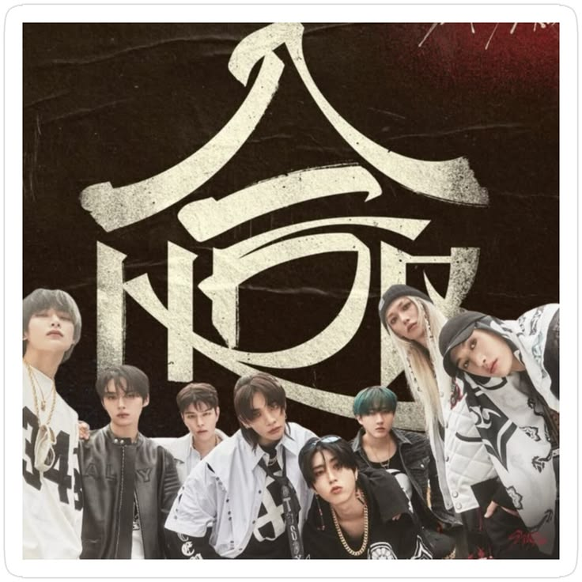
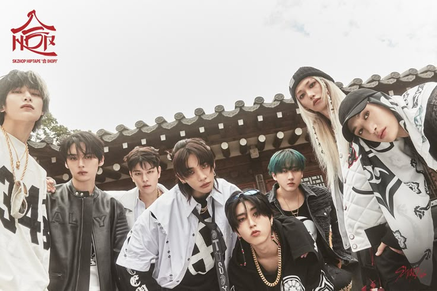

|
 |
El 13 de diciembre de 2024, Stray Kids cerró el año con el lanzamiento de 合 (HOP),
su primer mixtape oficial. El título, que en coreano significa "unión", representa
el trabajo conjunto de los ocho integrantes para dar vida a cada una de las canciones,
incluyendo el sencillo principal "Walkin On Water".
El proyecto incorporó elementos tradicionales coreanos, como el hanok y los colores del taegeuk, fusionándolos con un sonido fresco y experimental. HOP incluyó también canciones en solitario de cada miembro, mostrando su crecimiento individual dentro del grupo. |
| Periodo | Noviembre - Diciembre 2024 |
| Álbum | 合 (HOP) - 13 de diciembre de 2024 |
| Sencillo principal | "Walkin On Water" |
| Logro destacado | Primer mixtape oficial del grupo, con canciones en solitario de cada integrante |
